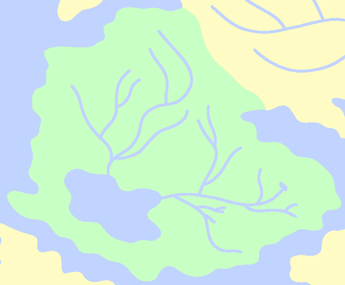
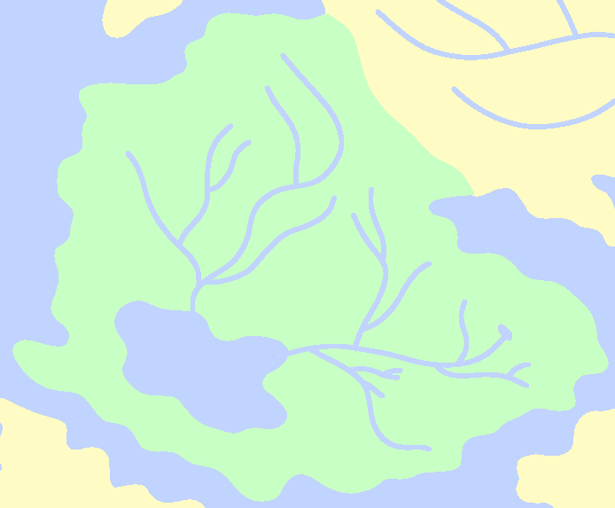

Aquatos
The rainforests of Aquatos are some of the most impressive throughout all of Karvaea, having host to life unlike anywhere else in the world. To separate them from the rainforests of other regions such as Drosera or Dolos, aquatesian rainforests have been dubbed the "archforests."
One of the most interesting physical features of Aquatos is the Bloody Lake to the southeast of the region. Bloody Lake is surrounded by land so rich with iron the water within it has taken on a blood-like appearance and metallic taste.
Close